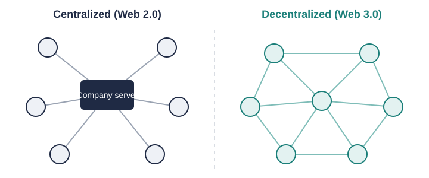
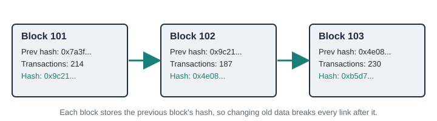

The Problem with Centralized Data
In Web 2.0, services such as social networks, email providers, and online stores keep user accounts and personal data on their own servers. This model is convenient, but it gives companies a great deal of power over that information. A user usually cannot see everything that is collected, cannot easily move it to another service, and must trust the company to protect it.
Centralized storage creates three main privacy concerns:
- Single point of failure: one breach can expose millions of records at once.
- Data monetization: personal information is often used for targeted advertising.
- Lock-in: accounts, contacts, and content are tied to one platform.
What Decentralization Changes
Web 3.0 replaces the single company server with a network of independent computers, called nodes. Each node keeps a copy of the shared record and follows the same rules for adding new data. No one organization can change the rules or the history alone.

How a Blockchain Stores Data
A blockchain groups transactions into blocks. Each block contains a cryptographic hash of the block before it, which links the blocks into a chain. If someone tried to change an old block, its hash would change and no longer match the next block, so the network would reject the edit. This is what makes blockchain records very hard to tamper with.

The basic steps for adding a transaction are:
- A user signs a transaction with their private key.
- The transaction is broadcast to the network.
- Nodes check that the signature and balance are valid.
- A new block containing the transaction is agreed on through a consensus process.
- Every node adds the block to its copy of the chain.
User-Controlled Identity and Data
In Web 3.0, a user logs in with a wallet instead of a username and password stored by a company. The wallet holds a private key that only the user knows. This brings two important privacy benefits: the user does not have to hand over an email address or phone number to sign in, and the same identity can be used across many applications.
Newer standards go further. The W3C Decentralized Identifiers (DIDs) and Verifiable Credentials specifications let a person prove a fact about themselves, such as being over 21 or holding a degree, without revealing the full document behind it.
| Feature | Web 2.0 (Centralized) | Web 3.0 (Decentralized) |
|---|---|---|
| Where data is stored | Company-owned servers | Distributed across network nodes |
| Login method | Username, password, email | Cryptographic wallet and keys |
| Who controls the account | The platform | The key holder |
| Data portability | Limited; depends on the platform | Same identity works across apps |
| Account recovery | "Forgot password" reset | Often impossible if keys are lost |
Limits of Data Ownership
Because public ledgers are permanent and open, a wallet address that is linked to a real person (for example, through an exchange account or a social media post) can reveal that person's entire transaction history. This also conflicts with privacy laws such as the EU's GDPR, which gives people the "right to erasure." Topic 2 looks more closely at these risks.